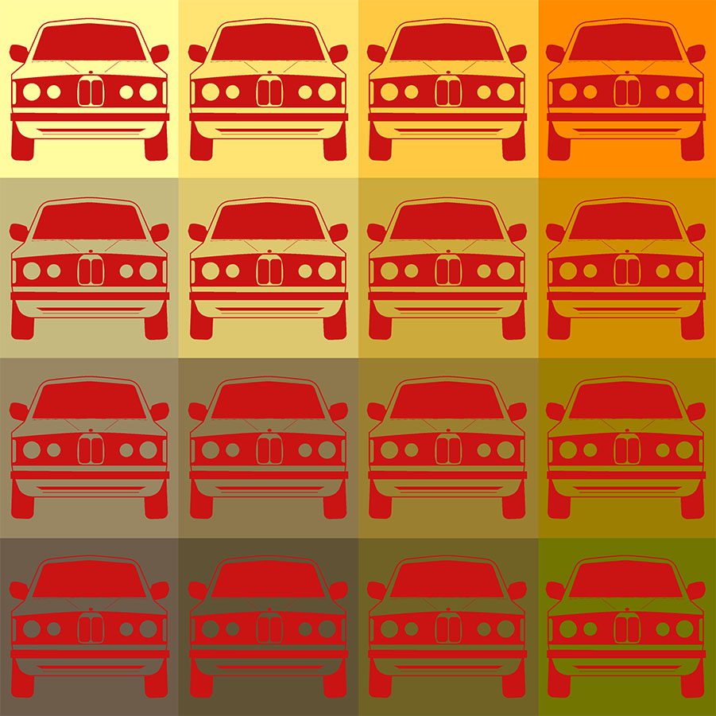
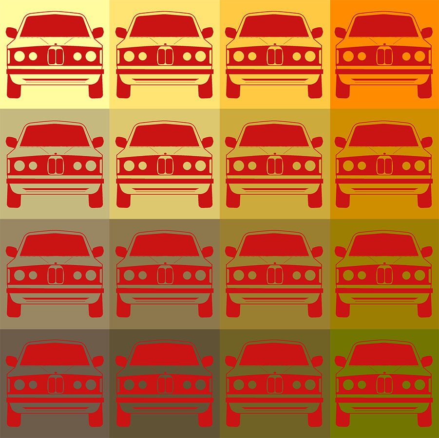

I was inspired by the way city lights look like on a rainy night for this piece. Cities become more colorful on a rainy night because all of the lights cut through and reflect off of the rain and the puddles. It creates a calm, colorful atmosphere, which was a lot of fun to recreate in Blender.
Design I for Media Project 0
 
